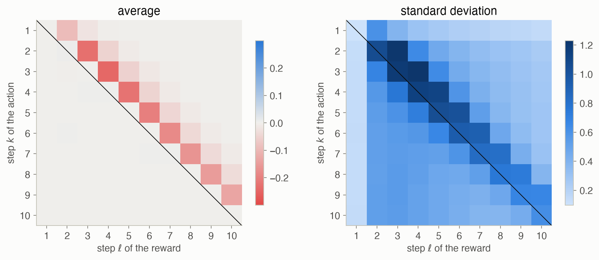
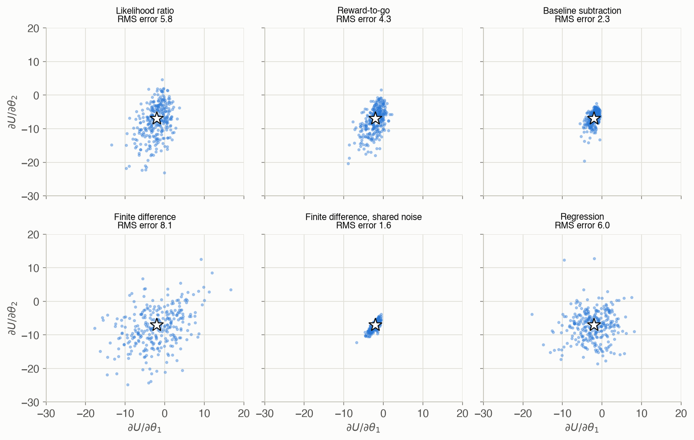
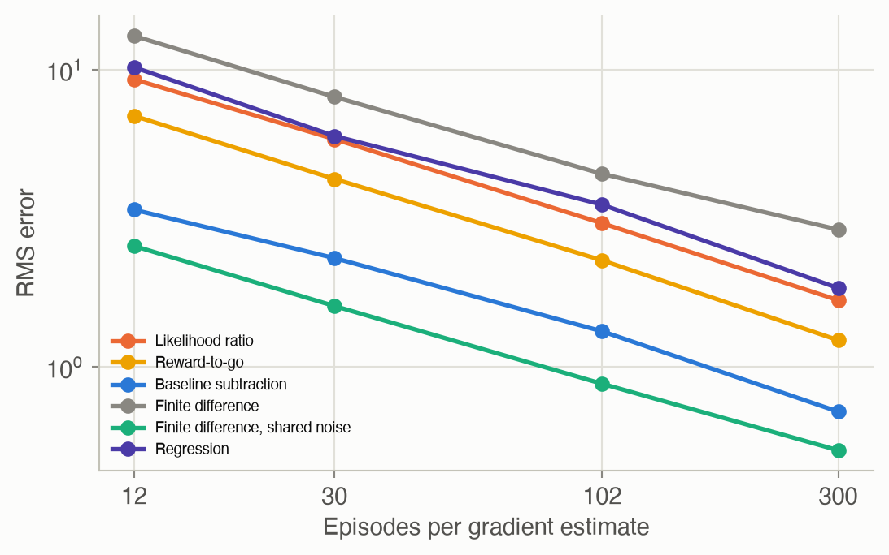
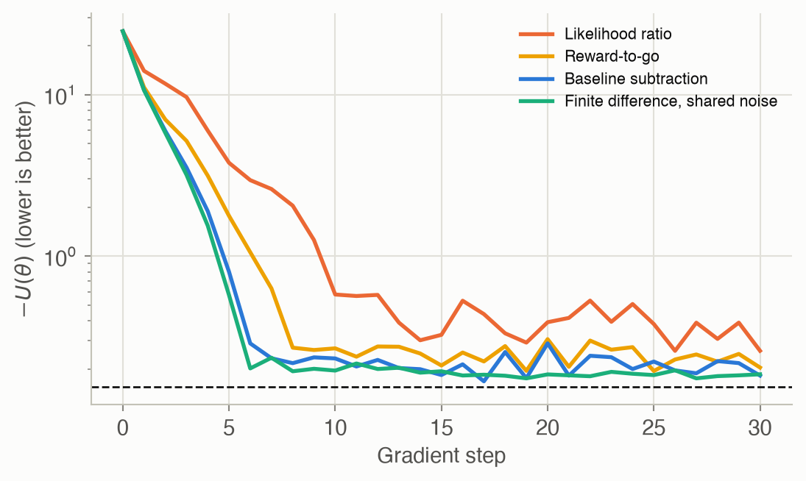

11 · Policy Gradient Estimation
Part II — Sequential Problems
Big picture
Where this chapter fits
Chapter 10 improved policies by trial and comparison: try parameters, keep the better ones. That ignores a valuable piece of information: the direction in which the expected return increases fastest, the gradient \(\nabla U(\theta)\). With a good estimate of it, you can climb steadily instead of searching blindly. This chapter is about estimating that gradient from simulated trajectories. The difficulty is that every estimate is noisy, and much of the chapter is about taming that noise. Chapter 12 then uses these estimates to optimize policies, and Chapter 13 adds a learned value function to make them far less noisy. The same estimators underlie modern reinforcement learning algorithms such as REINFORCE, PPO and actor-critic methods.
The question: how can you tell which way to change a policy’s parameters, when all you can do is run the policy and watch the rewards?
The short answer: either wiggle the parameters and see how the return changes (finite differences), or, for a stochastic policy, use the fact that the policy’s own probabilities tell you how to make good trajectories more likely (the likelihood ratio). Then cut the noise by crediting each action only with the rewards that come after it, and by comparing rewards with a baseline.
The key ideas at a glance
The gradient points uphill, but we can only estimate it. \(\nabla U(\theta)\) says how the expected return changes as each policy parameter changes. There’s rarely a formula, so we estimate it from rollouts. Every estimator trades bias (systematically wrong) against variance (noisy from run to run).
Finite differences: nudge and compare. Change one parameter by a small \(\delta\), estimate \(U\) again, and divide the change by \(\delta\). It’s simple and model-free, but noisy estimates of \(U\) are divided by a small number, which blows the noise up. The fix is common random numbers: run both evaluations with the same random seeds, so the noise mostly cancels. The regression gradient instead fits a plane to the results of many random nudges.
The likelihood ratio: make good trajectories more likely. For a stochastic policy, the gradient can be written as an average over trajectories of the return times \(\nabla_\theta \log p_\theta(\tau)\), the direction that makes that particular trajectory more probable. The transition model cancels out of this term, leaving only the policy’s own \(\nabla \log \pi_\theta(a \mid s)\). You need no model and no parameter nudges.
Reward-to-go: an action can’t affect the past. The plain likelihood ratio credits every action with the whole trajectory’s return, including rewards collected before the action was taken. Those terms average to zero but add noise. Crediting each action only with the rewards that follow it removes them, with no bias.
Baseline subtraction: better than what? Subtracting a baseline from the reward-to-go, such as the typical return from that point, also leaves the average unchanged, because the policy’s probabilities sum to one. It can reduce the variance a lot. The variance-minimizing constant baseline has a simple formula. The best state-dependent choice leads to the advantage \(A(s, a) = Q(s, a) - U(s)\), which is the bridge to actor-critic methods.
Vocabulary
| Term | Plain meaning |
|---|---|
| Policy gradient \(\nabla U(\theta)\) | How the expected return changes with each policy parameter |
| Bias, variance | Systematic error of an estimator, and its spread across repeated runs |
| Finite difference | Estimate a derivative from \(U(\theta + \delta e_i) - U(\theta)\) |
| Common random numbers | Reuse the same random seeds when comparing two policies |
| Regression gradient | Fit the gradient to the returns of many random perturbations |
| Score \(\nabla_\theta \log \pi_\theta(a \mid s)\) | The direction that makes action \(a\) in state \(s\) more likely |
| Likelihood ratio (REINFORCE) | Gradient estimate: average of return × score of the trajectory |
| Reward-to-go | Discounted reward from a step onward |
| Baseline | A value subtracted from the reward-to-go to reduce variance |
| Advantage \(A(s, a)\) | How much better action \(a\) is than the policy’s average in \(s\) |
After this chapter you can
- Estimate a policy gradient with finite differences and regression, and use common random numbers.
- Derive the likelihood ratio policy gradient, and compute it for a Gaussian policy.
- Explain why reward-to-go and baselines reduce variance without introducing bias.
- Compute the variance-minimizing constant baseline, and connect baselines to the advantage function.
- Measure an estimator’s bias and variance, and choose an estimator for a problem.
Intuition
TipAnalogy
You’re adjusting a thermostat schedule to cut your heating bill, and every month’s bill is noisy because the weather varies.
- Finite differences: change one setting for a month and compare bills. Unless the two months had the same weather, the comparison is mostly noise. Comparing on matched weather (common random numbers) fixes that.
- Likelihood ratio: you already vary your settings slightly from day to day (the policy is stochastic). Look at the days that turned out cheap and ask which way your settings leaned on those days. Lean further that way.
- Reward-to-go: judge each day’s setting only by what happened after it, not by the heating costs of the days before.
- Baseline: judge a day by whether it was cheaper than a typical day, not by its absolute cost.
We use the simple regulator from Chapter 10 (keep a number \(s\) near 0; reward \(-s^2\)) with the stochastic policy \(a \sim \mathcal{N}(\theta_1 s, \theta_2^2)\). For this problem the exact gradient is available, so every estimator can be scored exactly. At \(\theta = (-0.5, 0.5)\) the gradient \(\nabla U\) is (-2.04, -6.96). The return improves by making the gain more negative (pushing \(s\) back harder) and by making the policy less random.
Make good trajectories more likely
A stochastic policy sometimes pushes a bit harder than average and sometimes a bit softer. Episodes that went well tell you which way to lean. The likelihood ratio gradient adds up, for each episode, the return times the direction that makes that episode’s actions more likely. No parameter is ever nudged: the policy’s own randomness does the exploring. See Equation 3.
Don’t credit the past
In a 10-step episode, the plain likelihood ratio multiplies step 5’s action by the reward from steps 1–4 as well, even though that action couldn’t have affected them. On average those terms are exactly zero, but in any one episode they aren’t, so they add pure noise. Figure 5 shows it on the regulator: the terms in which the reward comes before the action average to zero but are just as noisy as the rest. Dropping them (reward-to-go) cuts the error at 30 episodes from 5.8 to 4.3. See Equation 4.
Better or worse than usual?
Here every reward is negative. So every action is “blamed” in proportion to how negative the rest of its episode was, even if it was a good action. Subtracting a baseline, a typical reward-to-go, turns this into a comparison: was this episode better or worse than usual? That doesn’t change the average gradient, and it cuts the error at 30 episodes to 2.3. See Equation 5 and Figure 6.
Formalism
Finite differences
For a unit vector \(e_i\) along parameter \(i\) and a small step \(\delta > 0\) (ADM §11.1):
\[ \nabla U(\theta) \approx \left[\frac{U(\theta + \delta e_1) - U(\theta)}{\delta},\ \ldots,\ \frac{U(\theta + \delta e_n) - U(\theta)}{\delta}\right] \tag{1}\]
In words. Nudge one parameter at a time and measure the slope.
Term by term.
- Each \(U\) is itself a Monte Carlo estimate (Chapter 10), so \(n + 1\) evaluations with \(m\) rollouts each cost \(m(n+1)\) episodes.
- A larger \(\delta\) adds bias (the function curves between the two points).
- A smaller \(\delta\) multiplies the evaluation noise by \(1/\delta\).
- With common random numbers, both evaluations use the same random seeds (A. Ng and M. Jordan’s PEGASUS, 2000). The difference then mostly reflects the parameter change, not luck.
- The estimate depends on how the policy is parameterized: parameters on very different scales need different steps.
Regression gradient
Perturb \(\theta\) in \(m\) random directions \(\Delta\theta^{(i)}\) and record the changes \(\Delta U_i = U(\theta + \Delta\theta^{(i)}) - U(\theta)\) (ADM §11.2):
\[ \nabla U(\theta) \approx \Delta\Theta^+ \Delta U, \qquad \Delta\Theta = \begin{bmatrix} (\Delta\theta^{(1)})^\top \\ \vdots \\ (\Delta\theta^{(m)})^\top \end{bmatrix} \tag{2}\]
In words. Fit a linear model \(\Delta U \approx \Delta\theta^\top g\) to all the perturbations by least squares (Chapter 8), and take its slope \(g\) as the gradient.
Term by term. \(\Delta\Theta^+\) is the pseudoinverse. Using more perturbations than parameters (a rule of thumb is twice as many) averages out noise. This is also known as simultaneous perturbation.
The likelihood ratio
Write \(U\) as an expectation over trajectories and move the gradient inside (ADM §11.3; P. Glynn, Communications of the ACM, 1990):
\[ \nabla U(\theta) = \mathbb{E}_\tau\big[\nabla_\theta \log p_\theta(\tau)\ R(\tau)\big], \qquad \nabla_\theta \log p_\theta(\tau) = \sum_{k=1}^{d} \nabla_\theta \log \pi_\theta\big(a^{(k)} \mid s^{(k)}\big) \tag{3}\]
In words. The gradient is the average, over trajectories, of the return times the direction that makes that trajectory more likely. That direction is the sum of the policy’s score at each step.
Term by term.
- \(R(\tau) = \sum_k \gamma^{k-1} r^{(k)}\) is the discounted return.
- \(\nabla_\theta \log \pi_\theta(a \mid s)\) is the policy’s score. For \(a \sim \mathcal{N}(\theta_1 s, \theta_2^2)\) it is \(\big((a - \theta_1 s)s/\theta_2^2,\ ((a - \theta_1 s)^2 - \theta_2^2)/\theta_2^3\big)\).
- Estimate the expectation by averaging over \(m\) rollouts.
Why it holds. \(U(\theta) = \int p_\theta(\tau) R(\tau)\,d\tau\). Differentiate under the integral, and use \(\nabla p = p \nabla \log p\) (the log-derivative trick of Chapter 10). That gives \(\int p_\theta(\tau)\,\nabla \log p_\theta(\tau)\,R(\tau)\,d\tau\), an expectation. The trajectory’s probability is \(p(s^{(1)}) \prod_k T(s^{(k+1)} \mid s^{(k)}, a^{(k)})\,\pi_\theta(a^{(k)} \mid s^{(k)})\). Its logarithm is a sum in which only the \(\pi_\theta\) terms depend on \(\theta\), so the transition model drops out. For a deterministic policy there is no \(\pi_\theta\) probability to differentiate. The gradient then has to flow through the transition model, which must be known.
Reward-to-go
Expanding Equation 3 gives products of each step’s score \(f^{(k)}\) with each step’s reward \(r^{(\ell)}\). The terms with \(\ell < k\), where the reward came before the action, have expectation zero. Removing them gives (ADM §11.4):
\[ \nabla U(\theta) = \mathbb{E}_\tau\left[\sum_{k=1}^{d} \nabla_\theta \log \pi_\theta\big(a^{(k)} \mid s^{(k)}\big)\ \gamma^{k-1}\, r_{\text{to-go}}^{(k)}\right], \qquad r_{\text{to-go}}^{(k)} = \sum_{\ell=k}^{d} \gamma^{\ell-k} r^{(\ell)} \tag{4}\]
In words. Credit each action only with the discounted rewards from its own step onward.
Term by term.
- \(r_{\text{to-go}}^{(k)}\) is a one-sample estimate of the action value \(Q_\theta(s^{(k)}, a^{(k)})\), and replacing it by \(Q_\theta\) itself also gives the exact gradient.
- \(\gamma^{k-1}\) discounts the whole credit back to the start.
Why it holds. For \(\ell < k\), condition on the history up to step \(k\). The reward \(r^{(\ell)}\) is then fixed, and \(\mathbb{E}_{a^{(k)}}[\nabla \log \pi_\theta(a^{(k)} \mid s^{(k)})] = \nabla \int \pi_\theta(a \mid s)\,da = \nabla 1 = 0\). So each such term averages to zero and can be dropped.
Baseline subtraction
Any function of the state alone can be subtracted from the reward-to-go without bias (ADM §11.5). The combination with reward-to-go is the classic REINFORCE algorithm (R. Williams, Machine Learning, 1992):
\[ \nabla U(\theta) = \mathbb{E}_\tau\left[\sum_{k=1}^{d} \nabla_\theta \log \pi_\theta\big(a^{(k)} \mid s^{(k)}\big)\ \gamma^{k-1} \Big(r_{\text{to-go}}^{(k)} - r_{\text{base}}\big(s^{(k)}\big)\Big)\right] \tag{5}\]
In words. Judge each action by how much better its future rewards were than a typical level, not by their raw size.
Term by term.
- \(r_{\text{base}}(s)\) can depend on the state but not on the action.
- Its expected contribution is \(\mathbb{E}[\nabla \log \pi_\theta \cdot \gamma^{k-1} r_{\text{base}}(s^{(k)})]\). This is zero for the same reason as before: the score averages to zero over actions.
For a constant baseline per parameter \(i\), the variance is smallest when (ADM §11.5):
\[ r_{\text{base}, i} = \frac{\mathbb{E}\big[\ell_i^2\, r_{\text{to-go}}\big]}{\mathbb{E}\big[\ell_i^2\big]}, \qquad \ell_i = \gamma^{k-1} \frac{\partial}{\partial \theta_i} \log \pi_\theta\big(a^{(k)} \mid s^{(k)}\big) \tag{6}\]
In words. The best constant baseline is an average of the reward-to-go, weighted by how strongly each step’s score counts.
Term by term. The expectations are over all steps of all trajectories. In practice they’re estimated from the same rollouts, which adds a small bias that fades as \(m\) grows.
Why it holds. The variance of the \(i\)-th component is \(\mathbb{E}[(\ell_i (r_{\text{to-go}} - b))^2] - (\text{gradient}_i)^2\), and the second term doesn’t depend on \(b\). Setting the derivative of the first term to zero, \(-2\,\mathbb{E}[\ell_i^2 r_{\text{to-go}}] + 2b\,\mathbb{E}[\ell_i^2] = 0\), gives the formula.
Using the state’s value \(U_\theta(s)\) as the baseline turns \(Q_\theta(s, a) - U_\theta(s)\) into the advantage:
\[ \nabla U(\theta) = \mathbb{E}_\tau\left[\sum_{k=1}^{d} \nabla_\theta \log \pi_\theta\big(a^{(k)} \mid s^{(k)}\big)\ \gamma^{k-1} A_\theta\big(s^{(k)}, a^{(k)}\big)\right], \qquad A_\theta(s, a) = Q_\theta(s, a) - U_\theta(s) \tag{7}\]
In words. Push up actions that were better than the policy’s average in their state, and push down those that were worse.
Term by term. The advantage is usually unknown. Chapter 13’s actor-critic methods learn it alongside the policy.
Worked example
Finite differences by hand
With the exact value of the regulator, at \(\theta = (-0.5, 0.5)\) and \(\delta = 0.1\):
| Parameter | \(U(\theta + 0.1\, e_i)\) | \(U(\theta)\) | Difference / 0.1 | Exact \(\partial U / \partial \theta_i\) |
|---|---|---|---|---|
| \(\theta_1\) | -2.1930 | -1.9397 | -2.53 | -2.04 |
| \(\theta_2\) | -2.7057 | -1.9397 | -7.66 | -6.96 |
The likelihood ratio by hand (one step)
A one-step problem: the action \(a \sim \mathcal{N}(\mu, \sigma^2)\) with \((\mu, \sigma) = (0, 1)\), and the reward is \(2a\). The true gradient is \((\partial/\partial\mu, \partial/\partial\sigma)\ \mathbb{E}[2a] = (2, 0)\). The scores are \((a - \mu)/\sigma^2 = a\) and \(((a - \mu)^2 - \sigma^2)/\sigma^3 = a^2 - 1\). Three samples:
| \(a\) | reward \(2a\) | score for \(\mu\) | score for \(\sigma\) | reward × score for \(\mu\) | reward × score for \(\sigma\) |
|---|---|---|---|---|---|
| 0.8 | 1.6 | 0.8 | −0.36 | 1.28 | −0.58 |
| −0.4 | −0.8 | −0.4 | −0.84 | 0.32 | 0.67 |
| 1.5 | 3.0 | 1.5 | 1.25 | 4.50 | 3.75 |
| average | 2.03 | 1.28 |
Reward-to-go by hand
A 3-step episode with \(\gamma = 0.9\), scores \(f^{(1)}, f^{(2)}, f^{(3)} = 1, -1, 2\) (one parameter) and rewards \(r = (-1, -2, -1)\):
- The return is \(R = -1 - 0.9 \times 2 - 0.81 \times 1 = -3.61\). The plain likelihood ratio term is \((1 - 1 + 2) \times (-3.61) = -7.22\).
- The rewards-to-go are \(r_{\text{to-go}}^{(3)} = -1\), \(r_{\text{to-go}}^{(2)} = -2 + 0.9(-1) = -2.9\) and \(r_{\text{to-go}}^{(1)} = -1 + 0.9(-2.9) = -3.61\).
- The reward-to-go term is \(1 \times 1 \times (-3.61) + (-1) \times 0.9 \times (-2.9) + 2 \times 0.81 \times (-1) = -3.61 + 2.61 - 1.62 = -2.62\).
The two terms differ by \(-4.60\). That’s exactly the “past reward” terms: \((-1) \times (-1) = 1\) for step 2’s score against the first reward, and \(2 \times (-1 + 0.9 \times (-2)) = -5.6\) for step 3’s score against the first two rewards. Averaged over many episodes such terms vanish, but in one episode they’re large.
Interactive
Estimator lab
Choose an estimator and a simulation budget (episodes per gradient estimate). Each dot is one gradient estimate, from 300 repetitions. The star is the exact gradient. Notice which estimators are wide (high variance), which are off-center (biased), and how the cloud shrinks with the budget.
Gradient ascent with a noisy gradient
Climb the regulator’s value with the gradient estimator of your choice, computed live in your browser from fresh random rollouts. Each step moves the parameters by at most the step size, in the estimated uphill direction. Press Run again for new random numbers. It starts with baseline subtraction; switch to the plain likelihood ratio with 5 episodes per step to see a noisy gradient wander. A smaller budget per step is cheaper but noisier.
Algorithms & code
Simulating the regulator
def sample_trajectories(theta, m: int, rng, d: int = HORIZON):
"""m episodes of d steps under the Gaussian policy, as arrays of shape
(m, d): states, actions and rewards (row i is episode i, column k is
step k + 1)."""
s = START_MEAN + START_SD * rng.standard_normal(m)
S, A, R = np.zeros((m, d)), np.zeros((m, d)), np.zeros((m, d))
for k in range(d):
a = gaussian_policy(theta, s, rng)
S[:, k], A[:, k] = s, a
s, R[:, k] = step(s, a, rng)
return S, A, R
def grad_log_policy(theta, s, a):
"""Gradient of log N(a | theta_1 s, sd^2) with sd = |theta_2| + 1e-5,
for arrays s and a of the same shape. Returns shape s.shape + (2,):
d/d theta_1 = (a - theta_1 s) s / sd^2
d/d theta_2 = ((a - theta_1 s)^2 - sd^2) / sd^3 * sign(theta_2)"""
sd = abs(theta[1]) + 1e-5
z = a - theta[0] * s # deviation from the mean action
g1 = z * s / sd**2
g2 = (z**2 - sd**2) / sd**3 * np.sign(theta[1])
return np.stack([g1, g2], axis=-1)
def exact_gradient(theta, d: int = HORIZON) -> np.ndarray:
"""Gradient of exact_value, by differentiating its recursion:
ms' = gain^2 ms + noise_var, so
d ms'/d theta_1 = 2 gain ms + gain^2 d ms/d theta_1,
d ms'/d theta_2 = gain^2 d ms/d theta_2 + 2 sd sign(theta_2)."""
gain, sd = 1 + theta[0], abs(theta[1]) + 1e-5
noise_var = sd**2 + NOISE_SD**2
ms, dms = START_MEAN**2 + START_SD**2, np.zeros(2)
grad = np.zeros(2)
for t in range(d):
grad -= GAMMA**t * dms # U = -sum_t gamma^t E[s_t^2]
dms = np.array([2 * gain * ms + gain**2 * dms[0],
gain**2 * dms[1] + 2 * sd * np.sign(theta[1])])
ms = gain**2 * ms + noise_var
return gradusing ADM, LinearAlgebra, Random, Statistics
# m episodes of d steps: states, actions and rewards as m × d matrices.
function sample_trajectories(θ, m, rng; d = REGULATOR_HORIZON)
S, A, R = zeros(m, d), zeros(m, d), zeros(m, d)
for i in 1:m
s = REGULATOR_START[1] + REGULATOR_START[2] * randn(rng)
for k in 1:d
a = regulator_policy(θ, s, rng)
S[i, k], A[i, k] = s, a
s, R[i, k] = regulator_step(s, a, rng)
end
end
return S, A, R
end
# Score of the Gaussian policy: ∇θ log N(a | θ₁ s, sd²) with sd = |θ₂| + 1e-5.
function grad_log_policy(θ, s, a)
sd, z = abs(θ[2]) + 1e-5, a - θ[1] * s
return [z * s / sd^2, (z^2 - sd^2) / sd^3 * sign(θ[2])]
end
θ = [-0.5, 0.5]
∇U = regulator_exact_gradient(θ)Finite differences and regression
def finite_difference_gradient(U, theta, delta: float) -> Array:
"""Forward differences: (U(theta + delta e_i) - U(theta)) / delta for
each coordinate i. U may be noisy; each call is a fresh estimate."""
theta = np.asarray(theta, dtype=float)
u0 = U(theta)
grad = np.zeros(len(theta))
for i in range(len(theta)):
step = np.zeros(len(theta))
step[i] = delta
grad[i] = (U(theta + step) - u0) / delta
return grad
def regression_gradient(U, theta, delta: float, m: int, rng) -> Array:
"""Perturb theta in m random directions of length delta, record how U
changes, and fit the gradient by least squares: grad ~ dTheta^+ dU."""
theta = np.asarray(theta, dtype=float)
directions = rng.standard_normal((m, len(theta)))
dtheta = delta * directions / np.linalg.norm(directions, axis=1,
keepdims=True)
u0 = U(theta)
du = np.array([U(theta + dt) - u0 for dt in dtheta])
return np.linalg.pinv(dtheta) @ du# Forward differences, one parameter at a time.
function finite_difference_gradient(U, θ, δ)
u0 = U(θ)
return [(U(θ .+ δ .* (1:length(θ) .== i)) - u0) / δ for i in eachindex(θ)]
end
# Random perturbations of length δ; least-squares fit of the changes in U.
function regression_gradient(U, θ, δ, m, rng)
ΔΘ = reduce(vcat, (δ .* normalize(randn(rng, length(θ)))' for _ in 1:m)) # m × n
u0 = U(θ)
ΔU = [U(θ .+ ΔΘ[i, :]) - u0 for i in 1:m]
return pinv(ΔΘ) * ΔU
end
# Monte Carlo U with 10 rollouts; `shared` reuses one seed so both evaluations see the same noise.
function U_estimate(θ, rng; m = 10)
total = 0.0
for _ in 1:m
s, ret = REGULATOR_START[1] + REGULATOR_START[2] * randn(rng), 0.0
for t in 1:REGULATOR_HORIZON
s, r = regulator_step(s, regulator_policy(θ, s, rng), rng)
ret += REGULATOR_γ^(t - 1) * r
end
total += ret
end
return total / m
end
fd(seed; shared) = finite_difference_gradient(
shared ? (t -> U_estimate(t, MersenneTwister(seed))) : (t -> U_estimate(t, MersenneTwister(rand(UInt32)))),
θ, 0.01)
spread(v) = std(first.(v)) + std(last.(v)) # sum of the two components' spreads
fresh = [fd(s; shared = false) for s in 1:200]
common = [fd(s; shared = true) for s in 1:200]
@assert spread(common) < spread(fresh) / 10 # shared random numbers tame the noiseLikelihood ratio, reward-to-go and baseline
def discounted_returns(r: Array, gamma: float) -> Array:
"""R(tau) = sum_k gamma^(k-1) r_k for each trajectory (row)."""
return r @ gamma ** np.arange(r.shape[1])
def rewards_to_go(r: Array, gamma: float) -> Array:
"""rtg[i, k] = sum over l >= k of gamma^(l-k) r[i, l]: the discounted
reward from step k on, discounted back to step k."""
rtg = np.zeros_like(r)
running = np.zeros(r.shape[0])
for k in range(r.shape[1] - 1, -1, -1): # sweep backward in time
running = r[:, k] + gamma * running
rtg[:, k] = running
return rtg
def likelihood_ratio_gradient(g: Array, r: Array, gamma: float) -> Array:
"""Average over trajectories of (sum_k grad log pi_k) * R(tau)."""
score = g.sum(axis=1) # (m, n): grad log p(tau)
return (score * discounted_returns(r, gamma)[:, None]).mean(axis=0)
def reward_to_go_gradient(g: Array, r: Array, gamma: float) -> Array:
"""Like the likelihood ratio, but each action is credited only with
rewards that come after it: sum_k grad log pi_k gamma^(k-1) rtg_k."""
discount = gamma ** np.arange(r.shape[1]) # gamma^(k-1)
weights = discount * rewards_to_go(r, gamma) # (m, d)
return (g * weights[:, :, None]).sum(axis=1).mean(axis=0)
def baseline_gradient(g: Array, r: Array, gamma: float) -> Array:
"""Reward-to-go minus, for each parameter i, the constant baseline that
minimizes the estimate's variance: E[l_i^2 rtg] / E[l_i^2], where
l_i = gamma^(k-1) d/d theta_i log pi. Pooled over all steps here."""
discount = gamma ** np.arange(r.shape[1])
ell = g * discount[None, :, None] # (m, d, n)
rtg = rewards_to_go(r, gamma)[:, :, None] # (m, d, 1)
base = (ell**2 * rtg).sum(axis=(0, 1)) / (ell**2).sum(axis=(0, 1))
return (ell * (rtg - base)).sum(axis=1).mean(axis=0)# g[i, k] is the score (a vector) of step k of trajectory i; R[i, k] its reward.
scores(θ, S, A) = [grad_log_policy(θ, S[i, k], A[i, k]) for i in axes(S, 1), k in axes(S, 2)]
discounts(d, γ) = γ .^ (0:d-1)
function rewards_to_go(R, γ)
rtg, running = zero(R), zeros(size(R, 1))
for k in size(R, 2):-1:1 # sweep backward in time
running = R[:, k] .+ γ .* running
rtg[:, k] = running
end
return rtg
end
likelihood_ratio(g, R, γ) = mean(sum(g[i, :]) * (R[i, :] ⋅ discounts(size(R, 2), γ)) for i in axes(R, 1))
function reward_to_go(g, R, γ)
w = discounts(size(R, 2), γ)' .* rewards_to_go(R, γ)
return mean(sum(g[i, k] * w[i, k] for k in axes(R, 2)) for i in axes(R, 1))
end
function with_baseline(g, R, γ)
disc, rtg = discounts(size(R, 2), γ), rewards_to_go(R, γ)
ℓ = [disc[k] .* g[i, k] for i in axes(R, 1), k in axes(R, 2)]
base = sum(ℓ[j] .^ 2 .* rtg[j] for j in eachindex(ℓ)) ./ sum(ℓ[j] .^ 2 for j in eachindex(ℓ))
return mean(sum(ℓ[i, k] .* (rtg[i, k] .- base) for k in axes(R, 2)) for i in axes(R, 1))
endRun them
rng = np.random.default_rng(1)
S, A, R = sr.sample_trajectories(THETA, 100, rng) # 100 episodes
g = sr.grad_log_policy(THETA, S, A) # scores, (100, 10, 2)
estimates = {"likelihood ratio": likelihood_ratio_gradient(g, R, GAMMA),
"reward-to-go": reward_to_go_gradient(g, R, GAMMA),
"baseline": baseline_gradient(g, R, GAMMA)}rng = MersenneTwister(1)
reps = [begin
S, A, R = sample_trajectories(θ, 10, rng)
g = scores(θ, S, A)
(likelihood_ratio(g, R, REGULATOR_γ), reward_to_go(g, R, REGULATOR_γ), with_baseline(g, R, REGULATOR_γ))
end for _ in 1:300]
method_spread(j) = spread([r[j] for r in reps])
@assert method_spread(3) < method_spread(2) < method_spread(1) # baseline < reward-to-go < likelihood ratio
S, A, R = sample_trajectories(θ, 100_000, rng)
@assert isapprox(reward_to_go(scores(θ, S, A), R, REGULATOR_γ), ∇U; atol = 0.3)exact gradient ( -2.04, -6.96)
likelihood ratio ( -1.33, -7.94)
reward-to-go ( -1.96, -7.21)
baseline ( -2.12, -6.06)
NoteReading the Julia code (for Python programmers)
[f(i, k) for i in axes(S, 1), k in axes(S, 2)]builds a matrix, one entry per(i, k), like a nested list comprehension.(1:length(θ) .== i)is a vector that is 1 at positioniand 0 elsewhere, the unit vector \(e_i\).R[i, :] ⋅ wis a dot product (\cdotthen Tab), likeR[i] @ w.begin ... endgroups several statements into one expression, used here inside a comprehension.zero(R)makes an array of zeros shaped likeR, likenp.zeros_like(R).
Results
Why reward-to-go works

The largest average of a term on or below the diagonal is 0.0052. That’s 2.2 standard errors from zero, about the largest you’d expect by chance among 55 terms that are truly zero. Their standard deviations, meanwhile, are as large as those of the terms that matter.
All estimators at equal cost


Does lower variance help learning?

After 10 steps (100 episodes), the median value is -0.58 with the plain likelihood ratio, -0.27 with reward-to-go and -0.23 with the baseline. The optimum is -0.155.
Solved problems
Problem 1: the cost of finite differences. A policy has 6 parameters, and each evaluation of \(U\) uses 20 rollouts. How many rollouts does one forward-difference gradient cost? What does a likelihood ratio estimate with the same total cost use?
TipSolution
One evaluation at \(\theta\) and one per parameter: \(7 \times 20 = 140\) rollouts. The likelihood ratio uses all 140 trajectories at the current \(\theta\) for a single estimate, and its cost doesn’t grow with the number of parameters. That’s why likelihood ratio methods dominate for policies with many parameters, such as neural networks.
Problem 2: parameters on different scales. A policy’s gain is stored as \(\theta_1\) in units of 1, and its noise level as \(\theta_2\) in hundredths (\(\sigma = \theta_2 / 100\)). With \(\partial U/\partial \sigma = -7\), what is \(\partial U / \partial \theta_2\)? Why does one finite-difference step \(\delta\) suit one parameter but not the other?
TipSolution
By the chain rule, \(\partial U/\partial\theta_2 = (\partial U/\partial\sigma)(d\sigma/d\theta_2) = -7 / 100 = -0.07\). A step \(\delta = 0.01\) in \(\theta_1\) is a small change, but in \(\theta_2\) it changes \(\sigma\) by only \(0.0001\). The change in \(U\) is then far smaller than the evaluation noise, so that component of the estimate is pure noise. Rescale parameters to comparable units, or use per-parameter steps.
Problem 3: a baseline doesn’t bias. A policy picks action 1 with probability \(p = \sigma(\theta)\) (the logistic function) and action 0 otherwise. Show that \(\mathbb{E}_a[\nabla_\theta \log \pi_\theta(a) \cdot b] = 0\) for any constant \(b\).
TipSolution
For the logistic function, \(\frac{d}{d\theta}\log p = 1 - p\) and \(\frac{d}{d\theta}\log(1-p) = -p\). Then \(\mathbb{E}[\nabla \log \pi \cdot b] = b\,\big(p(1-p) + (1-p)(-p)\big) = 0\). In general, \(\sum_a \pi(a)\nabla\log\pi(a) = \sum_a \nabla\pi(a) = \nabla \sum_a \pi(a) = \nabla 1 = 0\).
Problem 4: the diagonal terms. In Figure 5, the diagonal terms (step \(k\)’s score times step \(k\)’s reward) also average to zero for the regulator. Why? Would that hold if the reward were \(-s^2 - a^2\)?
TipSolution
The regulator’s reward at step \(k\) is \(-s_k^2\), which is fixed before action \(a_k\) is chosen. Conditioning on \(s_k\), \(\mathbb{E}_{a_k}[\nabla\log\pi(a_k \mid s_k)] \cdot r_k = 0 \cdot r_k\). With an action cost \(-a_k^2\), the reward at step \(k\) depends on \(a_k\), so the diagonal terms carry signal and must be kept. That’s why the reward-to-go includes the current step’s reward.
Problem 5: which estimator? You tune a robot controller with 3 parameters on a physical robot, where you can’t replay the same random disturbances. Then you tune a 10,000-parameter neural network policy in a simulator. Which estimators suit each case?
TipSolution
- The robot: there are few parameters, so perturbation methods are affordable, but common random numbers are unavailable. Use finite differences or the regression gradient with enough repetitions, or a likelihood ratio method with a baseline if the policy can be made stochastic. The likelihood ratio needs no model of the robot.
- The network: finite differences would need 10,001 evaluations per gradient, which is hopeless. Use the likelihood ratio with reward-to-go and a baseline, whose cost doesn’t grow with the number of parameters. In a simulator you could also fix the random seeds, which helps any method.
Recap
- Policy gradient methods estimate \(\nabla U(\theta)\) from rollouts, and every estimate trades bias against variance. Why it matters: the gradient tells an optimizer which way to move (Chapter 12), but a noisy gradient wastes steps or misleads.
- Finite differences nudge parameters and compare (Equation 1); common random numbers make them accurate. Why it matters: they need nothing but a simulator, but their cost grows with the number of parameters, and without shared noise, small steps drown in noise.
- The likelihood ratio uses the policy’s own randomness: return times score (Equation 3). Why it matters: it needs no model and costs the same however many parameters there are. It’s the basis of REINFORCE and all modern policy gradient methods.
- Reward-to-go and baselines remove noise without adding bias (Equation 4, Equation 5, Equation 6). Why it matters: here they cut the error at 30 episodes from 5.8 to 2.3, and they make learning faster and steadier.
- The best baselines lead to the advantage function (Equation 7). Why it matters: learning \(A(s, a)\) alongside the policy is exactly what actor-critic methods do (Chapter 13).
Cheat sheet & connections
| Name | Formula | Ref |
|---|---|---|
| Finite difference | \(\big(U(\theta + \delta e_i) - U(\theta)\big)/\delta\) | Equation 1 |
| Regression gradient | \(\Delta\Theta^+ \Delta U\) | Equation 2 |
| ★ Likelihood ratio | \(\mathbb{E}_\tau[\nabla\log p_\theta(\tau) R(\tau)]\), \(\nabla\log p_\theta(\tau) = \sum_k \nabla\log\pi_\theta(a^{(k)} \mid s^{(k)})\) | Equation 3 |
| Reward-to-go | \(\mathbb{E}\big[\sum_k \nabla\log\pi_\theta\, \gamma^{k-1} r_{\text{to-go}}^{(k)}\big]\) | Equation 4 |
| ★ Baseline (REINFORCE) | \(\mathbb{E}\big[\sum_k \nabla\log\pi_\theta\, \gamma^{k-1} (r_{\text{to-go}}^{(k)} - r_{\text{base}}(s^{(k)}))\big]\) | Equation 5 |
| Best constant baseline | \(\mathbb{E}[\ell_i^2 r_{\text{to-go}}] / \mathbb{E}[\ell_i^2]\) | Equation 6 |
| Advantage form | \(\mathbb{E}\big[\sum_k \nabla\log\pi_\theta\, \gamma^{k-1} A_\theta(s^{(k)}, a^{(k)})\big]\) | Equation 7 |
Common pitfalls
- Tiny finite-difference steps with fresh noise. The noise is divided by \(\delta\). Share random numbers, or use a larger step and accept some bias.
- Crediting actions with past rewards. Always use reward-to-go. It’s free variance reduction.
- A baseline that depends on the action. That biases the gradient. The baseline may depend on the state, not the action.
- Deterministic policies with the likelihood ratio. There’s no action probability to differentiate. Add exploration noise, or use a model.
- Mismatched parameter scales. Gradient components can differ by orders of magnitude. Rescale the parameters, or use natural gradients (Chapter 12).
Connections
- Ch 10 · Policy Search: the same log-derivative trick, applied to a search distribution instead of trajectories.
- Ch 12 · Policy Gradient Optimization: gradient ascent, natural gradients and trust regions using these estimates.
- Ch 13 · Actor-Critic Methods: learn the advantage as a baseline.
- Ch 3 · Inference: likelihood weighting uses the same kind of ratio of probabilities.
- Appendix F · Simple regulator: the problem used here.